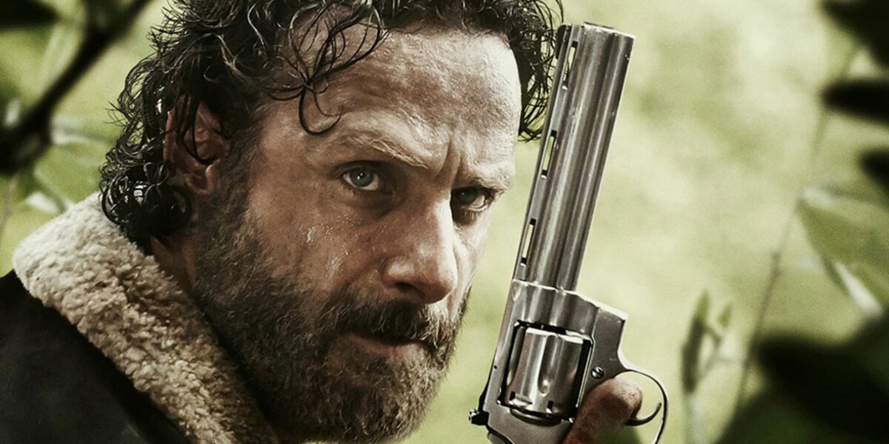

Introduction
Rick Grimes est le personnage principal de la série télévisée The Walking Dead, interprété par Andrew Lincoln. Il est un ancien shérif adjoint du comté de King, en Géorgie, qui devient un leader charismatique et protecteur dans un monde post-apocalyptique envahi par des zombies, appelés "rôdeurs".
Rick Grimes
Histoire
Au début de la série, Rick se réveille d’un coma dans un hôpital abandonné et découvre que le monde a sombré dans le chaos. Sa première mission est de retrouver sa famille : sa femme Lori et son fils Carl. Une fois réunis, il prend rapidement les rênes d’un groupe de survivants et fait tout son possible pour les protéger, bien que cela le pousse souvent à faire des choix moraux difficiles.